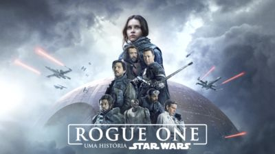

Filmes da saga Star Wars em ordem cronológica:
Trilogia prequela:
Episódio 1 – Ameaça Fantasma
Obi-Wan e seu mentor embarcam em uma perigosa aventura na tentativa de salvar o planeta das garras de Darth Sidious. Durante a viagem, eles conhecem um habilidoso menino e decidem treiná-lo para se tornar um Jedi. Mas o tempo irá revelar que as coisas nem sempre são o que aparentam ser.

Episódio 2 – Ataque dos Clones
Tentado por promessas de poder, Anakin Skywalker se aproxima de Darth Sidious e participa de um plano para acabar com os Cavaleiros Jedi.

Episódio 3 – A vingança dos Sith
As Guerras Clônicas estão em pleno andamento e Anakin Skywalker mantém um elo de lealdade com Palpatine, ao mesmo tempo em que luta para que seu casamento com Padmé Amidala não seja afetado por esta situação. Seduzido por promessas de poder, Anakin se aproxima cada vez mais de Darth Sidious até se tornar o temível Darth Vader. Juntos eles tramam um plano para aniquilar de uma vez por todas com os cavaleiros jedi.

Antologia:
Rogue One: Uma história Star Wars
A Aliança Rebelde faz um movimento arriscado e rouba os planos da Estrela da Morte, a arma definitiva de destruição do Império.

Solo: Uma história Star Wars
Em dificuldade financeira, o piloto Han Solo e sua namorada Qi'ra buscam trabalho. Eles colocam as mãos em uma substância valiosa, mas perigosa, e que acaba levando à perseguição do Império e à separação entre os dois. Preocupado, Han usa toda a sua esperteza para se infiltrar em um plano arriscado, mas que pode render a oportunidade de voltar à terra natal e reencontrar a sua amada. No caminho, o piloto encontra parceiros importantes, como Chewbacca e Lando Calrissian.
Trilogia original:
Episódio 4 – Uma nova esperança
A princesa Leia é mantida refém pelas forças imperiais comandadas por Darth Vader. Luke Skywalker e o capitão Han Solo precisam libertá-la e restaurar a liberdade e a justiça na galáxia.

Episódio 5 – O Império Contra-ataca
Yoda treina Luke Skywalker para ser um cavaleiro Jedi. Han Solo corteja a Princesa Leia enquanto Darth Vader retorna para combater as forças rebeldes que tentam salvar a galáxia.

Episódio 6 – O Retorno de Jedi
Luke Skywalker e seus amigos viajam para Tatooine e salvam seu amigo Han Solo do lorde do crime Jabba o Hutt. O Império Galático começou a construção de uma segunda Estrela da Morte, visando aniquilar a Aliança Rebelde, mas seu término está comprometido pela Frota Rebelde, que insiste em dar um fim ao Império. Neste meio tempo, Luke Skywalker luta para resgatar Vader, um ex-Jedi, de volta do lado sombrio da Força.

Trilogia sequela:
Episódio 7 – O Despertar da Força
A queda de Darth Vader e do Império levou ao surgimento de uma nova força sombria: a Primeira Ordem. Eles procuram o jedi Luke Skywalker, desaparecido. A resistência tenta desesperadamente encontrá-lo antes para salvar a galáxia.

Episódio 8 – Os Últimos Jedi
A tranquila e solitária vida de Luke Skywalker sofre uma reviravolta quando ele conhece Rey, uma jovem que mostra fortes sinais da Força. O desejo dela de aprender o estilo dos Jedi força Luke a tomar uma decisão que mudará sua vida para sempre. Enquanto isso, Kylo Ren e o General Hux lideram a Primeira Ordem para um ataque total contra Leia e a Resistência pela supremacia da galáxia.

Episódio 9 – A Ascenção Skywalker
Com o retorno do Imperador Palpatine, a Resistência toma a frente da batalha. Treinando para ser uma completa Jedi, Rey se encontra em conflito com passado e futuro, e teme pelas respostas que pode conseguir com Kylo Ren.